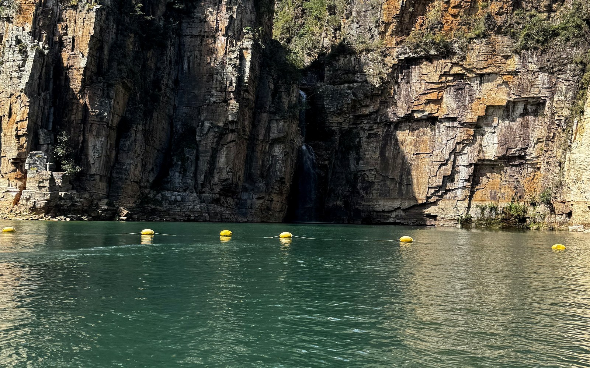
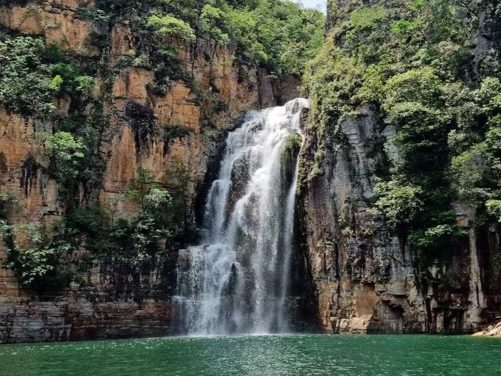

Cânions de Capitólio
Navegação entre os imponentes paredões de pedra de mais de 20 metros de altura, cachoeiras cristalinas e parada para banho nas águas verde-esmeralda.

Passeios de lancha privativos ou compartilhados no Lago de Furnas conduzidos pela piloto Kelli Roque. Segurança para crianças, paradas para banho nas águas esmeraldas, músicas animadas e fotos incríveis.
KM 306
Embarque Ponte do Rio Turvo (MG-050)
Privativo
Ou compartilhado sob medida
100% Seguro
Piloto experiente, cautelosa e alto-astral
Você aproveita cada ponto turístico sem pressa, com tempo para mergulhar com coletes e macarrões flutuantes, tirar fotos nos paredões e curtir os bares flutuantes.
Navegação entre os imponentes paredões de pedra de mais de 20 metros de altura, cachoeiras cristalinas e parada para banho nas águas verde-esmeralda.

Uma das paradas mais famosas do roteiro, com águas calmas, estrutura de bar flutuante, drinks, caiaques e visual deslumbrante para relaxar.

Queda d'água espetacular que deságua direto no lago, cercada por piscinas naturais nos cânions — parada obrigatória para fotos inesquecíveis.

Enseada tranquila entre montanhas, perfeita para nadar com segurança, curtir com as crianças e aproveitar a paz do Lago de Furnas.

Vista das mansões de Escarpas do Lago, paradas com estrutura de lazer aquático, banana boat opcional e muita alegria a bordo.

Lancha exclusiva para sua família, casal ou grupo de amigos. Escolha a trilha sonora, o tempo em cada parada e curta com total privacidade.
Com saída na Ponte do Rio Turvo (MG-050, KM 306) e atendimento ágil junto com a Naiara desde o primeiro contato no WhatsApp, a Kelli transforma o passeio em uma experiência segura, leve e inesquecível.
Ideal para famílias com crianças, idosos ou quem faz o primeiro passeio de lancha.
Explicações detalhadas de cada ponto turístico, trilha sonora ao seu gosto e ajuda para registrar as melhores fotos.
Leve suas bebidas favoritas e aproveite mergulhos tranquilos com macarrões flutuantes e coletes homologados.

5,0 ★
Nota máxima em 174 avaliações verificadas no Google Maps
Privativo ou Compartilhado
Opções de 2h, 3h, 4h ou dia inteiro no Lago de Furnas.

Selecione as paradas que você quer conhecer, a modalidade e envie para receber o atendimento da Kelli no WhatsApp.
“A Kelli arrasou em todo o passeio que durou 3 horas, super simpática, alegre, passou muita segurança, estava com duas crianças de 9 anos e nós amamos. Desde o atendimento no WhatsApp com a Naiara até a despedida, nota 1000!”
Graziela Mattos
Avaliação verificada no Google
“Pegamos um passeio privativo com a Kelli e foi simplesmente perfeito. Ela pilota com muita cautela, tem um humor contagiante, explica cada detalhe dos Cânions e ainda coloca as músicas que a gente gosta.”
Werner
Avaliação verificada no Google
“Experiência maravilhosa! A Kelli é uma excelente profissional, deixa todo mundo super à vontade nas paradas para banho e tira fotos lindas da família. Recomendo para todos que vêm a Capitólio!”
Franccine Papa
Avaliação verificada no Google